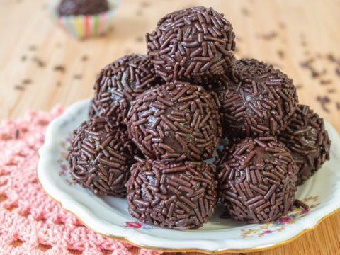

brigadeiro

a chocolate treat for sweet!
for time immemorial, brazilians have been making things into little balls. now you can try your hand at the most famous of them all, brigadeiro!
ingredients
- 14 oz condensed milk (1 can)
- 3-4 spoonfuls of chocolate/cocoa powder
- 1 spoonful of unsalted butter (do not use margarine!)
- optional: chocolate sprinkles
steps
- add all ingredients to a frying pan.
- turn the stove on low heat and stir the mixture (preferably with a wooden spoon) until it stops sticking to the bottom of the pan.
- remove from the pan. roll it into little balls and roll the balls in the chocolate sprinkles, if you have them on hand.
back home